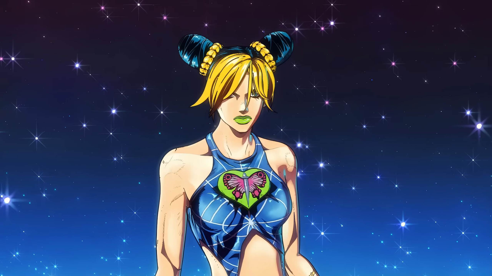
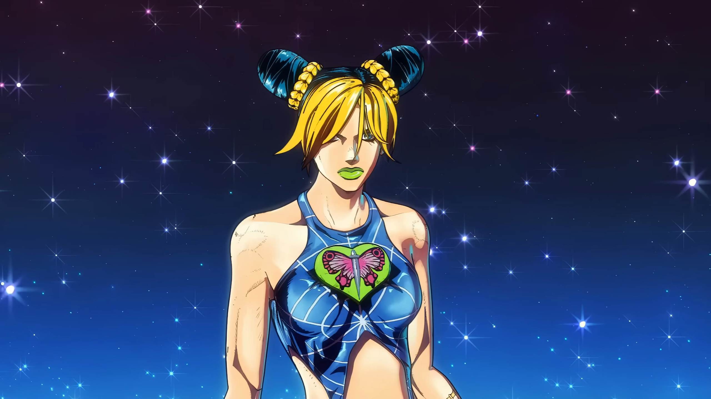

Jonathan Joestar
Jonathan Joestar, o protagonista da Parte 1: Phantom Blood de "Jojo's Bizarre Adventure", é um nobre gentil e determinado. Sua vida toma um rumo dramático quando ele enfrenta o vilão Dio Brando em uma batalha de gerações, marcando o início da longa jornada da família Joestar contra forças sobrenaturais.

 
